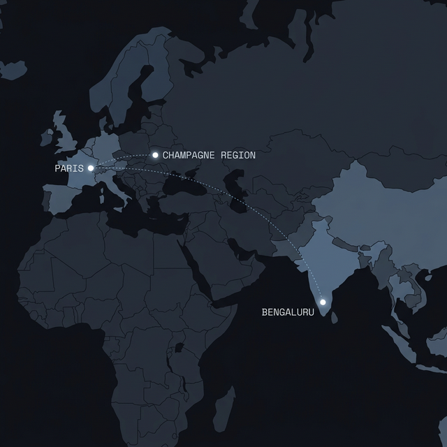
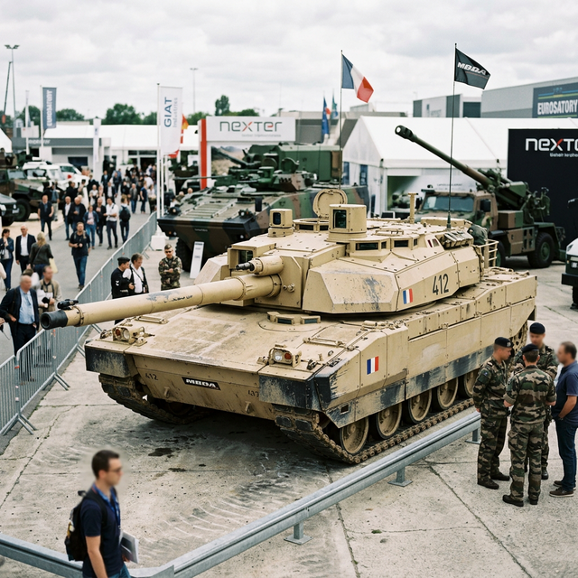
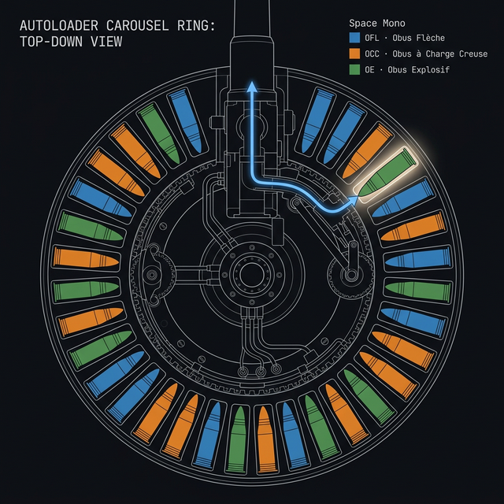
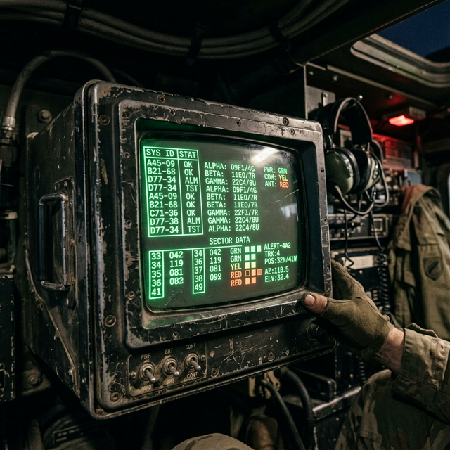
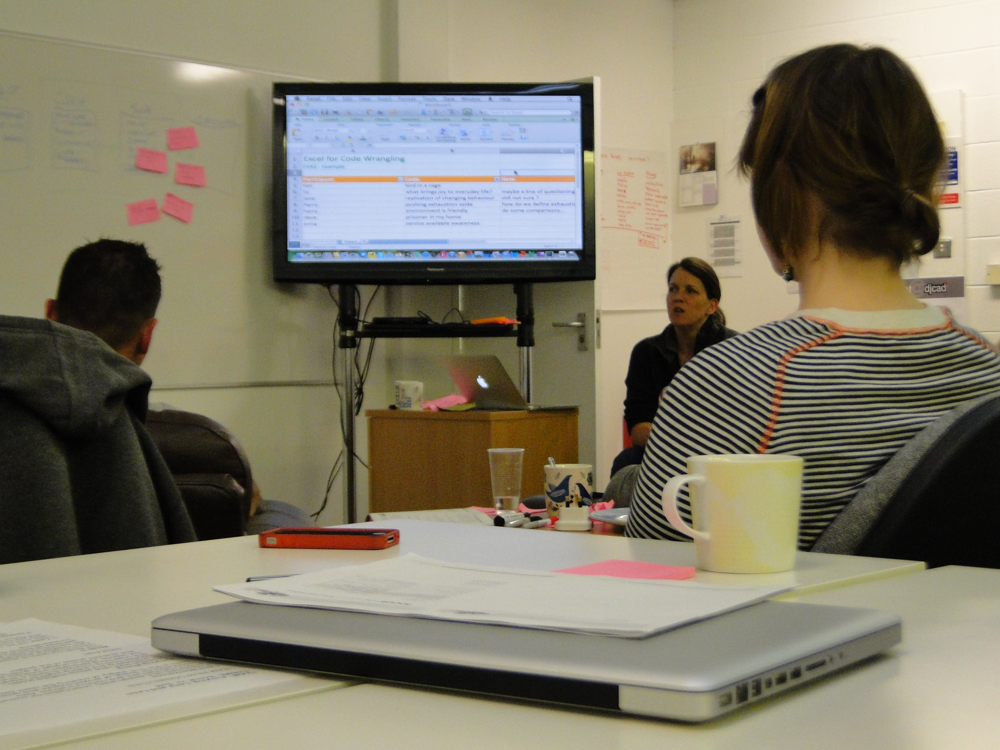
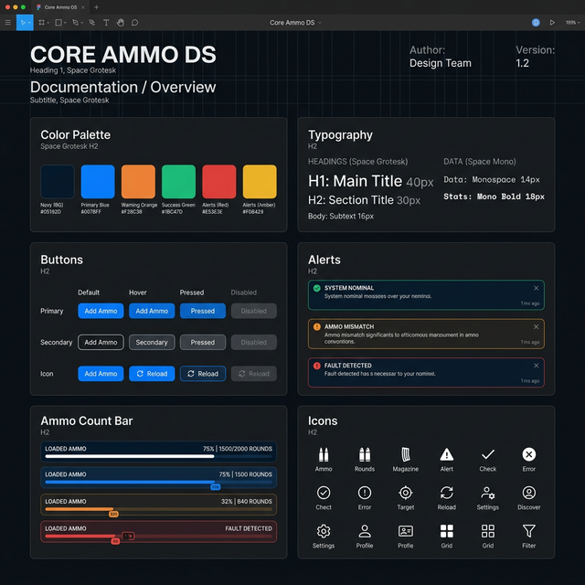

CHARGEUR is a tablet-based ammunition management system for the ALT-3 Main Battle Tank. I redesigned the interface to ensure that commanders and gunners—operating under extreme stress inside a cramped, vibrating vehicle—can instantly verify what they are about to fire.
On a training exercise in Champagne, Victor 4 — a three-man crew in their third year on the ALT-3 tank — engaged a simulated target.
The commander requested an armor-piercing round. The amber light confirmed it. The gunner fired a shaped charge instead.
In the debrief, the crew couldn't explain it. The interface had confirmed readiness, and they trusted it.
That incident report landed on my desk six weeks later. It was the fourth near-miss that year.
In early 2024 I was working out of a shared studio in Koramangala, Bengaluru — the kind of place where three product teams share a single espresso machine and everyone pretends the wifi is fine.
I got an email from Atelier Numérique Défense — a 12-person boutique agency in Paris that bridges defense contractors with UX capabilities they don't have in-house. Their lead, Léa Marchetti, had spent six months convincing the engineering team that their software problem was a design problem.
My job was to come in and prove that was true.


Here's the thing about the ALT-3 autoloader: it's genuinely impressive. A sealed carousel with 30 rounds — OFL (armour-piercing, for punching through plate), OCC (shaped charge, for penetrating fortifications), and OE (high-explosive, for everything else). The commander picks a type, the carousel spins, and in eight seconds there's a round ready to fire.
The crew never touches the ammunition. Not during a mission, not during an engagement. They push a button, they wait, and they trust.
And that's the thing — trust. Three different round types, three different tactical purposes, and the only thing standing between the right call and a wrong shot is a small amber light on a panel designed before most of the crew was born.
That trust is the entire design problem.

Each site visit required a 3-week advance request, approved by both Antigravity's security officer and the base commander. Four visits over four quarters. Every observation had to count.
For the first three months, the entire project ran over Figma shares and video calls bridging IST and CET. Every design decision had to be documented well enough to survive a handoff I wasn't in the room for.
Prototype testing moved from A3 laminated printouts (lo-fi) to a ruggedized Android tablet running a web prototype (mid-fi) to a hardware simulator (final). Each medium introduced fidelity gaps.
4 site visits. 11 interviews. 3 years of incident reports. That's where I started.
Before CHARGEUR, crews relied on a primitive software console that suffered from critical UX failures:

Victor 4 asked for an armor-piercing round. They got a shaped charge instead. The amber light still said "ready." Nobody in that crew had any way to catch the mistake before pulling the trigger.
The commander picks the round type. The gunner pulls the trigger. But the gunner has no screen, no status, nothing. One crew member told me: "The commander's on the radio and I'm just… hoping."
A simple question the panel couldn't answer. So crews guessed. They kept tally marks on tape. They called counts over the intercom. After three years of incident reports, four of them came down to the same thing: guessing wrong.
The supply officer's job was to keep eight vehicles armed and running. His tool was a shared Excel spreadsheet. Columns for each vehicle. Rows for round counts. Updated by radio, whenever someone remembered to call in.

The pre-mission loading sequence took 34 minutes. Two crew members physically handled each round — one to retrieve, one to confirm the type label verbally before handing it to the loader. Every round was announced aloud: "OFL, slot three." "OCC, slot four." A ritual. A verbal design that the software had never matched.
I sat in the corner and counted. Fourteen rounds without incident. On round fifteen — an OE — there was a two-second pause before the verbal confirmation. The crew member had picked up an OCC. He caught it. Set it down. Retrieved the correct round.
That pause was 2 seconds. In the field, under stress, that pause might not happen. That's how close-call errors work: invisible to the person who catches them.
Mismatch rate: 4 confirmed mismatches in 22 incidents — 18% of all reported training incidents involved the wrong round type
Blind handoff: In 100% of observed engagements, the gunner had zero visibility into which round type was chambered
Mental count errors: Crew estimates were off by an average of 2.4 rounds when compared to actual counts post-mission
Existing workarounds: Every crew had invented at least one unofficial method — tally marks on tape, verbal call-outs, or a written log
Every workaround was a design that already existed — just not in the software.
These are different things.
The commander panel is a single-screen tablet interface that answers three questions at a glance: What's loaded? How much is left? Is the system ready? The top bar shows telemetry (barrel temp, hydraulics, target distance) and autoloader status. The center shows the chambered round type in massive, color-coded text — blue for OFL, orange for OCC, green for OE. A green "READY TO FIRE" badge confirms the match. The right column shows three clickable ammo inventory cards. Tap one to request a type switch.
And when something doesn't match? The panel doesn't just turn yellow and leave you guessing. It tells you exactly what went wrong — shows both the requested and the chambered type — and gives you two clear options: abort and recycle, or confirm the override. No alarm bells, no noise. Just the truth, and a choice.
If Victor 4 had had this screen, they would have stopped. That's all I needed to hear.
In every crew I spoke to, the gunner was always the last to know what was happening around the vehicle. So I gave the gunner a range map — a radar-sweep display showing detected hostiles with distance, threat classification, and vector data. The chambered round type is always visible, and a proximity alert panel surfaces target data the moment contacts appear.
Now both crew members know what's loaded, at the same moment. No radio call needed.
The supply officer needed to see his entire fleet at once — which vehicles are running low, how urgently, and what to send them. So I built Fleet Command: a tactical map with diamond-shaped vehicle markers (green for nominal, amber for low), plus an inline priority queue at the bottom showing urgent vehicles with a one-click ASSIGN button to dispatch resupply.
When three vehicles are low and you've got one resupply truck, you need priorities. The queue sorts them — most critical first, one click to dispatch. When a vehicle goes from red to green, the supply officer sees it happen. For the first time, the loop actually closes.
I built 67 components that meet military display standards — and honestly, I'm more proud of this part than any individual screen. The whole system runs on three colors: blue for OFL, orange for OCC, and green for OE. Once you learn those three colors, every screen in the system reads the same way. Antigravity's engineering team adopted the system for two more programs — without changing a single token.

| Problem | Before | After |
|---|---|---|
| Mismatch detection | No match verification. Amber light = "ready," regardless of type | Explicit type-match confirmation. Mismatch triggers named alert with forced choice |
| Ammo count | No count display. Crew estimates from memory | Real-time count bars by type. Low-ammo threshold triggers amber warning |
| Gunner visibility | Zero. Gunner fires without knowing ammo type | Synchronized display. Gunner sees type + switch status in real-time |
| Fleet awareness | Radio estimates logged in Excel spreadsheet | Real-time tactical map with per-vehicle ammo state and one-click resupply |
| Type switch feedback | No progress indication. Commander waits, hopes | 4-second animated progress bar. Both commander and gunner see switch state |
Six commanders, four sessions each. We deliberately loaded the wrong round every time. With the new panel, every single one of them caught it. Every one chose the right action — abort or override. Nobody fired on a mismatched round.
With the old panel? Four out of six missed it completely and pulled the trigger.
Three weeks in, I was laying out UI zones without fully understanding how the autoloader actually worked — 30 slots, each with a type and a position, in a carousel that rotates. I was designing from layout intuition instead of from the data. Once I mapped the state machine properly, the screens basically designed themselves. Should've done that on day one.
The engineering lead saw every new interface element as an implicit dig at the autoloader he'd spent years building. It took me weeks to find the right framing: "Your hardware is trustworthy enough that when it shows a mismatch, the crew should take it seriously." The mismatch alert became a vote of confidence, not a criticism. That conversation should have happened in week one.
Col. Bergeron in procurement saw any new UI as new training cost. Fair enough. I had to prove that training six commanders on a new panel was cheaper than 22 incidents' worth of debriefs, remediation, and paperwork. The math worked. But getting that math together took four weeks I really didn't have.
Engineers don't move on design rationale. They move on incident reports.